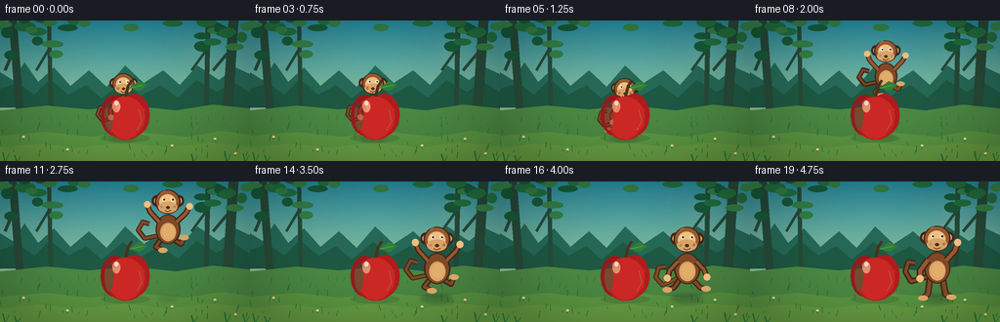
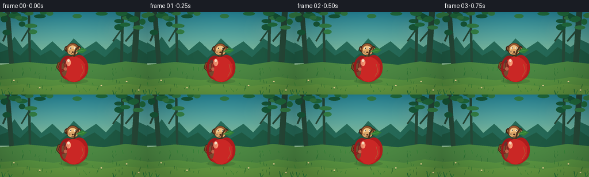

CODING AGENTS AS PIXEL WORLD MODELS
traex/GPT-5.6-Sol · dynamic_spatial_relationship_0052
点击播放 · 原生 RGB 像素
逐轮保存的候选
回放视频、检查图与代码变化。
每份候选均可单独播放。实际图片检查记录在下方工具轨迹中。
候选 01播放与检查图
点击播放 · 原生 RGB 像素


展开代码变化
--- 上一保存版本
+++ 本次保存版本
@@ -0,0 +1,308 @@
+from pathlib import Path
+import math
+import numpy as np
+from PIL import Image, ImageDraw, ImageFilter
+import artifact_io
+
+W, H, N = 256, 144, 20
+SS = 3
+rng = np.random.default_rng(52)
+
+
+def sc(v):
+ return int(round(v * SS))
+
+
+def box(b):
+ return tuple(sc(v) for v in b)
+
+
+def pts(p):
+ return [(sc(x), sc(y)) for x, y in p]
+
+
+def ellipse(d, b, fill, outline=None, width=1):
+ d.ellipse(box(b), fill=fill, outline=outline, width=sc(width) if outline else 1)
+
+
+def line(d, p, fill, width, joint="curve"):
+ d.line(pts(p), fill=fill, width=sc(width), joint=joint)
+
+
+def polygon(d, p, fill):
+ d.polygon(pts(p), fill=fill)
+
+
+def rounded(d, b, radius, fill, outline=None, width=1):
+ d.rounded_rectangle(box(b), radius=sc(radius), fill=fill, outline=outline,
+ width=sc(width) if outline else 1)
+
+
+def make_background():
+ im = Image.new("RGB", (W * SS, H * SS))
+ a = np.zeros((H * SS, W * SS, 3), dtype=np.uint8)
+ top = np.array([39, 139, 159], float)
+ bot = np.array([210, 226, 151], float)
+ for y in range(H * SS):
+ t = y / (H * SS - 1)
+ # brighter at the horizon
+ c = top * (1-t) + bot * t
+ a[y, :, :] = c.astype(np.uint8)
+ im = Image.fromarray(a, "RGB")
+ d = ImageDraw.Draw(im)
+
+ # Sun glow behind the clearing.
+ glow = Image.new("RGBA", im.size, (0, 0, 0, 0))
+ gd = ImageDraw.Draw(glow)
+ for r in range(36, 2, -2):
+ alpha = int(2 + 20 * (1-r/36)**2)
+ ellipse(gd, (205-r, 31-r, 205+r, 31+r), (255, 242, 173, alpha))
+ im = Image.alpha_composite(im.convert("RGBA"), glow)
+ d = ImageDraw.Draw(im)
+
+ # Layered jungle silhouette gives depth without competing with the subjects.
+ polygon(d, [(0, 83), (0, 53), (13, 61), (25, 43), (39, 63), (55, 48),
+ (72, 67), (91, 51), (109, 68), (128, 46), (147, 64),
+ (167, 51), (184, 66), (202, 46), (224, 61), (241, 48),
+ (256, 55), (256, 92)], (37, 104, 86, 255))
+ polygon(d, [(0, 89), (0, 70), (18, 64), (35, 76), (51, 60), (70, 76),
+ (88, 66), (104, 80), (126, 62), (144, 77), (164, 66),
+ (182, 79), (201, 61), (222, 73), (239, 63), (256, 74),
+ (256, 94)], (30, 88, 66, 255))
+
+ # Distant tree trunks.
+ for x, wid, lean in [(13, 8, 7), (239, 10, -6), (50, 4, 2), (213, 5, -2)]:
+ polygon(d, [(x-wid/2, 0), (x+wid/2, 0), (x+wid/2+lean, 91),
+ (x-wid/2+lean, 91)], (39, 74, 57, 255))
+ line(d, [(x+lean*.25, 28), (x+lean-15, 51)], (39, 74, 57, 255), 3)
+
+ # Canopy around the frame, deliberately green only (no apple-like circles).
+ leaf_specs = []
+ local_rng = np.random.default_rng(120)
+ for _ in range(42):
+ side = local_rng.choice([0, 1, 2])
+ if side == 0:
+ x, y = local_rng.uniform(-4, 63), local_rng.uniform(-7, 39)
+ elif side == 1:
+ x, y = local_rng.uniform(195, 261), local_rng.uniform(-7, 43)
+ else:
+ x, y = local_rng.uniform(0, 256), local_rng.uniform(-8, 13)
+ rx, ry = local_rng.uniform(5, 11), local_rng.uniform(3, 6)
+ col = local_rng.choice([0, 1, 2])
+ colors = [(24, 91, 58, 255), (34, 113, 64, 255), (52, 128, 70, 255)]
+ leaf_specs.append((x, y, rx, ry, colors[col]))
+ for x, y, rx, ry, c in leaf_specs:
+ ellipse(d, (x-rx, y-ry, x+rx, y+ry), c)
+
+ # Clearing ground.
+ polygon(d, [(0, 92), (48, 87), (91, 91), (133, 87), (180, 92),
+ (218, 86), (256, 90), (256, 144), (0, 144)], (76, 136, 67, 255))
+ polygon(d, [(0, 118), (48, 114), (93, 119), (139, 114), (191, 119),
+ (226, 113), (256, 117), (256, 144), (0, 144)], (91, 151, 66, 255))
+ polygon(d, [(0, 130), (38, 126), (81, 130), (127, 125), (173, 130),
+ (216, 125), (256, 129), (256, 144), (0, 144)], (103, 158, 67, 255))
+
+ # Fine grass, flowers kept tiny and pale.
+ local_rng = np.random.default_rng(6)
+ for _ in range(70):
+ x = local_rng.uniform(0, 256)
+ y = local_rng.uniform(99, 141)
+ h = local_rng.uniform(2, 7)
+ color = (42, int(local_rng.uniform(102, 132)), 51, 255)
+ line(d, [(x, y), (x+local_rng.uniform(-2,2), y-h)], color, .7)
+ for x, y in [(24, 119), (69, 132), (220, 121), (241, 136), (176, 128)]:
+ line(d, [(x, y+3), (x, y)], (46, 112, 50, 255), .8)
+ ellipse(d, (x-1.4, y-1, x+1.4, y+1), (245, 224, 155, 255))
+
+ # Soft vignette for cinematic focus.
+ arr = np.array(im.convert("RGB"), dtype=np.float32)
+ yy, xx = np.mgrid[0:H*SS, 0:W*SS]
+ nx = (xx-W*SS/2)/(W*SS/2)
+ ny = (yy-H*SS/2)/(H*SS/2)
+ vig = np.clip(1 - .16*np.maximum(0, nx*nx + ny*ny-.15), .79, 1.0)
+ arr *= vig[..., None]
+ return Image.fromarray(np.clip(arr, 0, 255).astype(np.uint8), "RGB").convert("RGBA")
+
+
+BG = make_background()
+
+
+def draw_shadow(im, cx, lift, strength=1.0, wide=18):
+ layer = Image.new("RGBA", im.size, (0,0,0,0))
+ d = ImageDraw.Draw(layer)
+ # Smaller and fainter at the top of the jump.
+ rw = wide * (1 - .36*lift)
+ rh = 4.2 * (1 - .44*lift)
+ ellipse(d, (cx-rw, 120-rh, cx+rw, 120+rh), (24, 55, 34, int(75*strength*(1-.55*lift))))
+ layer = layer.filter(ImageFilter.GaussianBlur(sc(2.1)))
+ im.alpha_composite(layer)
+
+
+def draw_monkey(im, x, y, scale, phase, f):
+ """Draw a friendly, anatomically readable monkey. phase: idle/crouch/flight/land/stand."""
+ layer = Image.new("RGBA", im.size, (0,0,0,0))
+ d = ImageDraw.Draw(layer)
+ s = scale
+ X = lambda q: x + q*s
+ Y = lambda q: y + q*s
+ dark = (66, 38, 24, 255)
+ fur_dark = (92, 50, 29, 255)
+ fur = (128, 72, 38, 255)
+ fur_lit = (151, 89, 48, 255)
+ tan = (218, 164, 102, 255)
+ tan_lit = (239, 191, 127, 255)
+
+ crouch = phase in ("crouch", "land")
+ flying = phase == "flight"
+ # Curled tail behind the body; tip has a bright rim.
+ if flying:
+ tail = [(X(-10),Y(5)),(X(-25),Y(8)),(X(-32),Y(-1)),(X(-27),Y(-10)),(X(-20),Y(-8))]
+ elif phase == "stand":
+ tail = [(X(-10),Y(7)),(X(-26),Y(12)),(X(-32),Y(2)),(X(-29),Y(-8)),(X(-22),Y(-7))]
+ else:
+ tail = [(X(-9),Y(8)),(X(-25),Y(15)),(X(-32),Y(7)),(X(-29),Y(-3)),(X(-22),Y(-4))]
+ line(d, tail, dark, max(4, int(6*s)))
+ line(d, tail, fur, max(2, int(3.5*s)))
+
+ # Legs change strongly with the leap so the action reads frame-to-frame.
+ if flying:
+ left_leg = [(X(-7),Y(9)),(X(-13),Y(17)),(X(-5),Y(21))]
+ right_leg = [(X(6),Y(9)),(X(15),Y(14)),(X(18),Y(7))]
+ elif crouch:
+ left_leg = [(X(-7),Y(9)),(X(-13),Y(18)),(X(-20),Y(20))]
+ right_leg = [(X(6),Y(9)),(X(14),Y(18)),(X(20),Y(19))]
+ else:
+ left_leg = [(X(-7),Y(9)),(X(-9),Y(25)),(X(-14),Y(29))]
+ right_leg = [(X(6),Y(9)),(X(9),Y(25)),(X(15),Y(28))]
+ for leg in (left_leg, right_leg):
+ line(d, leg, dark, max(4, int(7*s)))
+ line(d, leg, fur, max(3, int(4*s)))
+ ex, ey = leg[-1]
+ ellipse(d, (ex-5*s, ey-2.8*s, ex+5*s, ey+2.8*s), tan)
+
+ # Pear-like torso with belly patch.
+ ellipse(d, (X(-13),Y(-18),X(14),Y(14)), dark)
+ ellipse(d, (X(-11.5),Y(-17),X(12.5),Y(13)), fur)
+ ellipse(d, (X(-7.8),Y(-9),X(9),Y(11)), tan)
+ ellipse(d, (X(-5.5),Y(-7),X(7.8),Y(8)), (226,173,107,255))
+
+ # Arms: raised in midair, braced on landing, relaxed/waving at end.
+ if flying:
+ left_arm = [(X(-9),Y(-10)),(X(-19),Y(-21)),(X(-22),Y(-29))]
+ right_arm = [(X(10),Y(-10)),(X(20),Y(-20)),(X(24),Y(-27))]
+ elif phase == "land":
+ left_arm = [(X(-9),Y(-9)),(X(-18),Y(0)),(X(-20),Y(8))]
+ right_arm = [(X(10),Y(-9)),(X(18),Y(-1)),(X(21),Y(7))]
+ elif phase == "stand" and f >= 17:
+ left_arm = [(X(-9),Y(-10)),(X(-17),Y(1)),(X(-17),Y(9))]
+ # small celebratory raised hand, reinforcing completed action
+ wave = math.sin((f-17)*1.7)*2
+ right_arm = [(X(10),Y(-10)),(X(19),Y(-20)),(X(22+wave),Y(-28))]
+ else:
+ left_arm = [(X(-9),Y(-10)),(X(-16),Y(1)),(X(-15),Y(10))]
+ right_arm = [(X(10),Y(-10)),(X(16),Y(1)),(X(14),Y(10))]
+ for arm in (left_arm, right_arm):
+ line(d, arm, dark, max(4, int(7*s)))
+ line(d, arm, fur_lit, max(2, int(4*s)))
+ ex, ey = arm[-1]
+ ellipse(d, (ex-3.6*s,ey-3.6*s,ex+3.6*s,ey+3.6*s), tan_lit)
+
+ # Ears behind head.
+ ellipse(d, (X(-17),Y(-39),X(-7),Y(-27)), dark)
+ ellipse(d, (X(8),Y(-39),X(18),Y(-27)), dark)
+ ellipse(d, (X(-14.7),Y(-36.5),X(-8.5),Y(-29.5)), tan)
+ ellipse(d, (X(9.5),Y(-36.5),X(15.7),Y(-29.5)), tan)
+ # Head, brow, muzzle.
+ ellipse(d, (X(-13.5),Y(-45),X(14),Y(-19)), dark)
+ ellipse(d, (X(-12),Y(-44),X(12.5),Y(-20)), fur_lit)
+ ellipse(d, (X(-9),Y(-40),X(9),Y(-23)), tan_lit)
+ ellipse(d, (X(-10),Y(-32),X(10.5),Y(-20)), tan)
+ # Facial features, gaze subtly to the right throughout.
+ eye_y = Y(-34.5)
+ for ex in (-4.5, 5.0):
+ ellipse(d, (X(ex-1.65),eye_y-1.9*s,X(ex+1.65),eye_y+1.9*s), (248,239,213,255))
+ ellipse(d, (X(ex-.25),eye_y-1.25*s,X(ex+1.55),eye_y+1.15*s), (27,23,19,255))
+ ellipse(d, (X(ex+.35),eye_y-1.0*s,X(ex+.9),eye_y-.45*s), (255,255,255,255))
+ ellipse(d, (X(-1.6),Y(-27.3),X(2.4),Y(-24.3)), (75,42,29,255))
+ # Smile and cheek highlights.
+ line(d, [(X(-3),Y(-22.6)),(X(0),Y(-21.2)),(X(4),Y(-22.8))], (87,43,29,255), max(.7,1.1*s))
+ ellipse(d, (X(-8),Y(-28),X(-5),Y(-25)), (232,144,104,160))
+ ellipse(d, (X(6),Y(-28),X(9),Y(-25)), (232,144,104,160))
+ # Fur highlight.
+ line(d, [(X(-7),Y(-42)),(X(-3),Y(-44))], (189,116,64,210), max(.6,1*s))
+
+ im.alpha_composite(layer)
+
+
+def draw_apple(im):
+ # The apple is always painted after the monkey: in the opening it visibly occludes
+ # the monkey, which makes "behind" unambiguous.
+ layer = Image.new("RGBA", im.size, (0,0,0,0))
+ d = ImageDraw.Draw(layer)
+ # Contact shadow.
+ ellipse(d, (103,116,153,125), (35,68,37,52))
+ # Stem behind fruit and a crisp leaf.
+ line(d, [(128,80),(131,67),(135,61)], (74,50,28,255), 3)
+ polygon(d, [(132,69),(142,62),(151,66),(143,72)], (48,126,55,255))
+ line(d, [(133,69),(146,66)], (129,188,84,255), .8)
+ # Apple lobes / silhouette.
+ ellipse(d, (103,76,132,118), (152,25,27,255))
+ ellipse(d, (122,75,153,118), (174,28,29,255))
+ ellipse(d, (109,88,148,122), (181,28,30,255))
+ # rich red central body and shaped bottom
+ ellipse(d, (108,78,148,119), (202,39,37,255))
+ polygon(d, [(109,91),(111,110),(121,120),(129,122),(138,118),(147,107),(148,90)], (202,39,37,255))
+ # shaded edge and glossy highlight.
+ ellipse(d, (107,83,116,112), (151,24,31,140))
+ ellipse(d, (115,82,123,94), (255,148,119,210))
+ ellipse(d, (117,82,121,87), (255,230,202,235))
+ line(d, [(142,91),(145,103),(140,112)], (235,68,49,160), 1.1)
+ im.alpha_composite(layer)
+
+
+def frame_params(f):
+ if f <= 3:
+ return 126 + .6*math.sin(f*1.5), 91 + .5*math.sin(f*1.2), .82, "idle", 0.0
+ if f <= 5:
+ q = (f-3)/2
+ return 126+1.5*q, 91+5*q, .82, "crouch", 0.0
+ if f <= 14:
+ u = (f-6)/8
+ u = max(0.0, min(1.0, u))
+ smooth = u*u*(3-2*u)
+ x = 129 + 62*smooth
+ y = 91 - 43*4*u*(1-u)
+ scale = .83 + .16*smooth
+ return x, y, scale, "flight", 4*u*(1-u)
+ if f <= 16:
+ q = (f-14)/2
+ return 191, 91+5*math.sin(math.pi*q), .99, "land", 0.0
+ q = (f-17)/3
+ return 191 + .4*math.sin(f), 91-.8*math.sin(math.pi*max(0,q)), 1.0, "stand", 0.0
+
+
+def render(f):
+ im = BG.copy()
+ x, y, s, phase, lift = frame_params(f)
+ # Subject shadow sits on the same ground plane, making the jump arc legible.
+ draw_shadow(im, x, lift, strength=.78 if x < 150 else 1.0, wide=16*s)
+ draw_monkey(im, x, y, s, phase, f)
+ draw_apple(im)
+
+ # Gentle foreground blades add depth, but never cover faces or fruit.
+ d = ImageDraw.Draw(im)
+ for xg, hg in [(5,9),(17,6),(198,7),(232,10),(251,8)]:
+ line(d, [(xg,144),(xg-2,144-hg)], (30,93,46,220), 1.2)
+ line(d, [(xg+1,144),(xg+4,144-hg*.8)], (36,105,48,210), .9)
+
+ im = im.convert("RGB").resize((W,H), Image.Resampling.LANCZOS)
+ return np.asarray(im, dtype=np.uint8)
+
+
+def main():
+ frames = np.stack([render(i) for i in range(N)], axis=0)
+ artifact_io.save(frames, Path(__file__).resolve().parent)
+
+
+if __name__ == "__main__":
+ main()
可观测工具轨迹
实际执行的命令与返回图片。
命令 1exit 0
/bin/bash -lc "cat prompt.txt && printf '\\n---RULES---\\n' && cat GENERATION_RULES.md && printf '\\n---SPEC---\\n' && cat task_spec.json"
命令 2exit 0
/bin/bash -lc "find . -maxdepth 2 -type f -printf '%p\\n' | sort && printf '\\nTOOLS\\n' && command -v ffmpeg || true && command -v python3 || true"
命令 3exit 0
/bin/bash -lc 'cat artifact_io.py'
命令 4exit 0
/bin/bash -lc "cat > generate.py <<'PY'
from pathlib import Path
import math
import numpy as np
from PIL import Image, ImageDraw, ImageFilter
import artifact_io
W, H, N = 256, 144, 20
SS = 3
rng = np.random.default_rng(52)
def sc(v):
return int(round(v * SS))
def box(b):
return tuple(sc(v) for v in b)
def pts(p):
return [(sc(x), sc(y)) for x, y in p]
def ellipse(d, b, fill, outline=None, width=1):
d.ellipse(box(b), fill=fill, outline=outline, width=sc(width) if outline else 1)
def line(d, p, fill, width, joint=\"curve\"):
d.line(pts(p), fill=fill, width=sc(width), joint=joint)
def polygon(d, p, fill):
d.polygon(pts(p), fill=fill)
def rounded(d, b, radius, fill, outline=None, width=1):
d.rounded_rectangle(box(b), radius=sc(radius), fill=fill, outline=outline,
width=sc(width) if outline else 1)
def make_background():
im = Image.new(\"RGB\", (W * SS, H * SS))
a = np.zeros((H * SS, W * SS, 3), dtype=np.uint8)
top = np.array([39, 139, 159], float)
bot = np.array([210, 226, 151], float)
for y in range(H * SS):
t = y / (H * SS - 1)
# brighter at the horizon
c = top * (1-t) + bot * t
a[y, :, :] = c.astype(np.uint8)
im = Image.fromarray(a, \"RGB\")
d = ImageDraw.Draw(im)
# Sun glow behind the clearing.
glow = Image.new(\"RGBA\", im.size, (0, 0, 0, 0))
gd = ImageDraw.Draw(glow)
for r in range(36, 2, -2):
alpha = int(2 + 20 * (1-r/36)**2)
ellipse(gd, (205-r, 31-r, 205+r, 31+r), (255, 242, 173, alpha))
im = Image.alpha_composite(im.convert(\"RGBA\"), glow)
d = ImageDraw.Draw(im)
# Layered jungle silhouette gives depth without competing with the subjects.
polygon(d, [(0, 83), (0, 53), (13, 61), (25, 43), (39, 63), (55, 48),
(72, 67), (91, 51), (109, 68), (128, 46), (147, 64),
(167, 51), (184, 66), (202, 46), (224, 61), (241, 48),
(256, 55), (256, 92)], (37, 104, 86, 255))
polygon(d, [(0, 89), (0, 70), (18, 64), (35, 76), (51, 60), (70, 76),
(88, 66), (104, 80), (126, 62), (144, 77), (164, 66),
(182, 79), (201, 61), (222, 73), (239, 63), (256, 74),
(256, 94)], (30, 88, 66, 255))
# Distant tree trunks.
for x, wid, lean in [(13, 8, 7), (239, 10, -6), (50, 4, 2), (213, 5, -2)]:
polygon(d, [(x-wid/2, 0), (x+wid/2, 0), (x+wid/2+lean, 91),
(x-wid/2+lean, 91)], (39, 74, 57, 255))
line(d, [(x+lean*.25, 28), (x+lean-15, 51)], (39, 74, 57, 255), 3)
# Canopy around the frame, deliberately green only (no apple-like circles).
leaf_specs = []
local_rng = np.random.default_rng(120)
for _ in range(42):
side = local_rng.choice([0, 1, 2])
if side == 0:
x, y = local_rng.uniform(-4, 63), local_rng.uniform(-7, 39)
elif side == 1:
x, y = local_rng.uniform(195, 261), local_rng.uniform(-7, 43)
else:
x, y = local_rng.uniform(0, 256), local_rng.uniform(-8, 13)
rx, ry = local_rng.uniform(5, 11), local_rng.uniform(3, 6)
col = local_rng.choice([0, 1, 2])
colors = [(24, 91, 58, 255), (34, 113, 64, 255), (52, 128, 70, 255)]
leaf_specs.append((x, y, rx, ry, colors[col]))
for x, y, rx, ry, c in leaf_specs:
ellipse(d, (x-rx, y-ry, x+rx, y+ry), c)
# Clearing ground.
polygon(d, [(0, 92), (48, 87), (91, 91), (133, 87), (180, 92),
(218, 86), (256, 90), (256, 144), (0, 144)], (76, 136, 67, 255))
polygon(d, [(0, 118), (48, 114), (93, 119), (139, 114), (191, 119),
(226, 113), (256, 117), (256, 144), (0, 144)], (91, 151, 66, 255))
polygon(d, [(0, 130), (38, 126), (81, 130), (127, 125), (173, 130),
(216, 125), (256, 129), (256, 144), (0, 144)], (103, 158, 67, 255))
# Fine grass, flowers kept tiny and pale.
local_rng = np.random.default_rng(6)
for _ in range(70):
x = local_rng.uniform(0, 256)
y = local_rng.uniform(99, 141)
h = local_rng.uniform(2, 7)
color = (42, int(local_rng.uniform(102, 132)), 51, 255)
line(d, [(x, y), (x+local_rng.uniform(-2,2), y-h)], color, .7)
for x, y in [(24, 119), (69, 132), (220, 121), (241, 136), (176, 128)]:
line(d, [(x, y+3), (x, y)], (46, 112, 50, 255), .8)
ellipse(d, (x-1.4, y-1, x+1.4, y+1), (245, 224, 155, 255))
# Soft vignette for cinematic focus.
arr = np.array(im.convert(\"RGB\"), dtype=np.float32)
yy, xx = np.mgrid[0:H*SS, 0:W*SS]
nx = (xx-W*SS/2)/(W*SS/2)
ny = (yy-H*SS/2)/(H*SS/2)
vig = np.clip(1 - .16*np.maximum(0, nx*nx + ny*ny-.15), .79, 1.0)
arr *= vig[..., None]
return Image.fromarray(np.clip(arr, 0, 255).astype(np.uint8), \"RGB\").convert(\"RGBA\")
BG = make_background()
def draw_shadow(im, cx, lift, strength=1.0, wide=18):
layer = Image.new(\"RGBA\", im.size, (0,0,0,0))
d = ImageDraw.Draw(layer)
# Smaller and fainter at the top of the jump.
rw = wide * (1 - .36*lift)
rh = 4.2 * (1 - .44*lift)
ellipse(d, (cx-rw, 120-rh, cx+rw, 120+rh), (24, 55, 34, int(75*strength*(1-.55*lift))))
layer = layer.filter(ImageFilter.GaussianBlur(sc(2.1)))
im.alpha_composite(layer)
def draw_monkey(im, x, y, scale, phase, f):
\"\"\"Draw a friendly, anatomically readable monkey. phase: idle/crouch/flight/land/stand.\"\"\"
layer = Image.new(\"RGBA\", im.size, (0,0,0,0))
d = ImageDraw.Draw(layer)
s = scale
X = lambda q: x + q*s
Y = lambda q: y + q*s
dark = (66, 38, 24, 255)
fur_dark = (92, 50, 29, 255)
fur = (128, 72, 38, 255)
fur_lit = (151, 89, 48, 255)
tan = (218, 164, 102, 255)
tan_lit = (239, 191, 127, 255)
crouch = phase in (\"crouch\", \"land\")
flying = phase == \"flight\"
# Curled tail behind the body; tip has a bright rim.
if flying:
tail = [(X(-10),Y(5)),(X(-25),Y(8)),(X(-32),Y(-1)),(X(-27),Y(-10)),(X(-20),Y(-8))]
elif phase == \"stand\":
tail = [(X(-10),Y(7)),(X(-26),Y(12)),(X(-32),Y(2)),(X(-29),Y(-8)),(X(-22),Y(-7))]
else:
tail = [(X(-9),Y(8)),(X(-25),Y(15)),(X(-32),Y(7)),(X(-29),Y(-3)),(X(-22),Y(-4))]
line(d, tail, dark, max(4, int(6*s)))
line(d, tail, fur, max(2, int(3.5*s)))
# Legs change strongly with the leap so the action reads frame-to-frame.
if flying:
left_leg = [(X(-7),Y(9)),(X(-13),Y(17)),(X(-5),Y(21))]
right_leg = [(X(6),Y(9)),(X(15),Y(14)),(X(18),Y(7))]
elif crouch:
left_leg = [(X(-7),Y(9)),(X(-13),Y(18)),(X(-20),Y(20))]
right_leg = [(X(6),Y(9)),(X(14),Y(18)),(X(20),Y(19))]
else:
left_leg = [(X(-7),Y(9)),(X(-9),Y(25)),(X(-14),Y(29))]
right_leg = [(X(6),Y(9)),(X(9),Y(25)),(X(15),Y(28))]
for leg in (left_leg, right_leg):
line(d, leg, dark, max(4, int(7*s)))
line(d, leg, fur, max(3, int(4*s)))
ex, ey = leg[-1]
ellipse(d, (ex-5*s, ey-2.8*s, ex+5*s, ey+2.8*s), tan)
# Pear-like torso with belly patch.
ellipse(d, (X(-13),Y(-18),X(14),Y(14)), dark)
ellipse(d, (X(-11.5),Y(-17),X(12.5),Y(13)), fur)
ellipse(d, (X(-7.8),Y(-9),X(9),Y(11)), tan)
ellipse(d, (X(-5.5),Y(-7),X(7.8),Y(8)), (226,173,107,255))
# Arms: raised in midair, braced on landing, relaxed/waving at end.
if flying:
left_arm = [(X(-9),Y(-10)),(X(-19),Y(-21)),(X(-22),Y(-29))]
right_arm = [(X(10),Y(-10)),(X(20),Y(-20)),(X(24),Y(-27))]
elif phase == \"land\":
left_arm = [(X(-9),Y(-9)),(X(-18),Y(0)),(X(-20),Y(8))]
right_arm = [(X(10),Y(-9)),(X(18),Y(-1)),(X(21),Y(7))]
elif phase == \"stand\" and f >= 17:
left_arm = [(X(-9),Y(-10)),(X(-17),Y(1)),(X(-17),Y(9))]
# small celebratory raised hand, reinforcing completed action
wave = math.sin((f-17)*1.7)*2
right_arm = [(X(10),Y(-10)),(X(19),Y(-20)),(X(22+wave),Y(-28))]
else:
left_arm = [(X(-9),Y(-10)),(X(-16),Y(1)),(X(-15),Y(10))]
right_arm = [(X(10),Y(-10)),(X(16),Y(1)),(X(14),Y(10))]
for arm in (left_arm, right_arm):
line(d, arm, dark, max(4, int(7*s)))
line(d, arm, fur_lit, max(2, int(4*s)))
ex, ey = arm[-1]
ellipse(d, (ex-3.6*s,ey-3.6*s,ex+3.6*s,ey+3.6*s), tan_lit)
# Ears behind head.
ellipse(d, (X(-17),Y(-39),X(-7),Y(-27)), dark)
ellipse(d, (X(8),Y(-39),X(18),Y(-27)), dark)
ellipse(d, (X(-14.7),Y(-36.5),X(-8.5),Y(-29.5)), tan)
ellipse(d, (X(9.5),Y(-36.5),X(15.7),Y(-29.5)), tan)
# Head, brow, muzzle.
ellipse(d, (X(-13.5),Y(-45),X(14),Y(-19)), dark)
ellipse(d, (X(-12),Y(-44),X(12.5),Y(-20)), fur_lit)
ellipse(d, (X(-9),Y(-40),X(9),Y(-23)), tan_lit)
ellipse(d, (X(-10),Y(-32),X(10.5),Y(-20)), tan)
# Facial features, gaze subtly to the right throughout.
eye_y = Y(-34.5)
for ex in (-4.5, 5.0):
ellipse(d, (X(ex-1.65),eye_y-1.9*s,X(ex+1.65),eye_y+1.9*s), (248,239,213,255))
ellipse(d, (X(ex-.25),eye_y-1.25*s,X(ex+1.55),eye_y+1.15*s), (27,23,19,255))
ellipse(d, (X(ex+.35),eye_y-1.0*s,X(ex+.9),eye_y-.45*s), (255,255,255,255))
ellipse(d, (X(-1.6),Y(-27.3),X(2.4),Y(-24.3)), (75,42,29,255))
# Smile and cheek highlights.
line(d, [(X(-3),Y(-22.6)),(X(0),Y(-21.2)),(X(4),Y(-22.8))], (87,43,29,255), max(.7,1.1*s))
ellipse(d, (X(-8),Y(-28),X(-5),Y(-25)), (232,144,104,160))
ellipse(d, (X(6),Y(-28),X(9),Y(-25)), (232,144,104,160))
# Fur highlight.
line(d, [(X(-7),Y(-42)),(X(-3),Y(-44))], (189,116,64,210), max(.6,1*s))
im.alpha_composite(layer)
def draw_apple(im):
# The apple is always painted after the monkey: in the opening it visibly occludes
# the monkey, which makes \"behind\" unambiguous.
layer = Image.new(\"RGBA\", im.size, (0,0,0,0))
d = ImageDraw.Draw(layer)
# Contact shadow.
ellipse(d, (103,116,153,125), (35,68,37,52))
# Stem behind fruit and a crisp leaf.
line(d, [(128,80),(131,67),(135,61)], (74,50,28,255), 3)
polygon(d, [(132,69),(142,62),(151,66),(143,72)], (48,126,55,255))
line(d, [(133,69),(146,66)], (129,188,84,255), .8)
# Apple lobes / silhouette.
ellipse(d, (103,76,132,118), (152,25,27,255))
ellipse(d, (122,75,153,118), (174,28,29,255))
ellipse(d, (109,88,148,122), (181,28,30,255))
# rich red central body and shaped bottom
ellipse(d, (108,78,148,119), (202,39,37,255))
polygon(d, [(109,91),(111,110),(121,120),(129,122),(138,118),(147,107),(148,90)], (202,39,37,255))
# shaded edge and glossy highlight.
ellipse(d, (107,83,116,112), (151,24,31,140))
ellipse(d, (115,82,123,94), (255,148,119,210))
ellipse(d, (117,82,121,87), (255,230,202,235))
line(d, [(142,91),(145,103),(140,112)], (235,68,49,160), 1.1)
im.alpha_composite(layer)
def frame_params(f):
if f <= 3:
return 126 + .6*math.sin(f*1.5), 91 + .5*math.sin(f*1.2), .82, \"idle\", 0.0
if f <= 5:
q = (f-3)/2
return 126+1.5*q, 91+5*q, .82, \"crouch\", 0.0
if f <= 14:
u = (f-6)/8
u = max(0.0, min(1.0, u))
smooth = u*u*(3-2*u)
x = 129 + 62*smooth
y = 91 - 43*4*u*(1-u)
scale = .83 + .16*smooth
return x, y, scale, \"flight\", 4*u*(1-u)
if f <= 16:
q = (f-14)/2
return 191, 91+5*math.sin(math.pi*q), .99, \"land\", 0.0
q = (f-17)/3
return 191 + .4*math.sin(f), 91-.8*math.sin(math.pi*max(0,q)), 1.0, \"stand\", 0.0
def render(f):
im = BG.copy()
x, y, s, phase, lift = frame_params(f)
# Subject shadow sits on the same ground plane, making the jump arc legible.
draw_shadow(im, x, lift, strength=.78 if x < 150 else 1.0, wide=16*s)
draw_monkey(im, x, y, s, phase, f)
draw_apple(im)
# Gentle foreground blades add depth, but never cover faces or fruit.
d = ImageDraw.Draw(im)
for xg, hg in [(5,9),(17,6),(198,7),(232,10),(251,8)]:
line(d, [(xg,144),(xg-2,144-hg)], (30,93,46,220), 1.2)
line(d, [(xg+1,144),(xg+4,144-hg*.8)], (36,105,48,210), .9)
im = im.convert(\"RGB\").resize((W,H), Image.Resampling.LANCZOS)
return np.asarray(im, dtype=np.uint8)
def main():
frames = np.stack([render(i) for i in range(N)], axis=0)
artifact_io.save(frames, Path(__file__).resolve().parent)
if __name__ == \"__main__\":
main()
PY
python3 generate.py
ls -lh pixels.npz inspection.png index.html frames/00.png frames/19.png"命令 5exit 0
/bin/bash -lc "python3 - <<'PY'
import numpy as np
from PIL import Image
from pathlib import Path
z=np.load('pixels.npz')['pixels']
print('packed shape/dtype:',z.shape,z.dtype)
frames=np.stack([np.asarray(Image.open(f'frames/{i:02d}.png')) for i in range(20)])
print('frames:',frames.shape,frames.dtype,'range',frames.min(),frames.max())
print('mean abs consecutive deltas:',np.abs(frames[1:].astype(int)-frames[:-1]).mean((1,2,3)).round(2).tolist())
# red fruit centroid should stay fixed across frames
for i in [0,3,5,6,9,12,14,16,19]:
a=frames[i]
m=(a[:,:,0]>150)&(a[:,:,0]>a[:,:,1]*1.65)&(a[:,:,0]>a[:,:,2]*1.45)&(np.indices(a.shape[:2])[0]>60)
y,x=np.where(m)
print(i,'fruit-red centroid',round(x.mean(),1),round(y.mean(),1),'pixels',len(x))
PY
python3 -m py_compile generate.py"保存候选 1 份；完成命令 5 次；可验证图片返回 0 张。原始 API 响应与完整日志保留在本地。